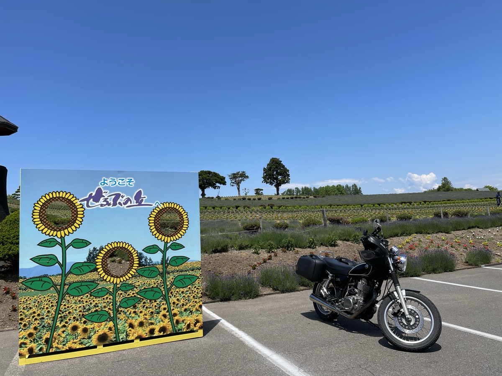
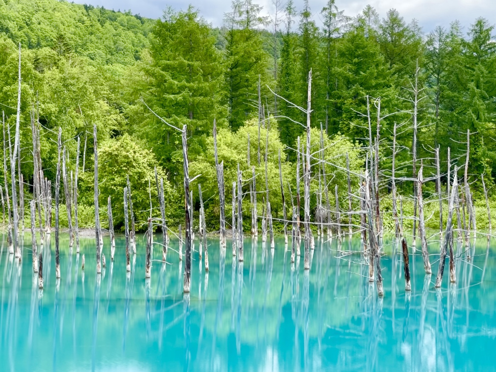
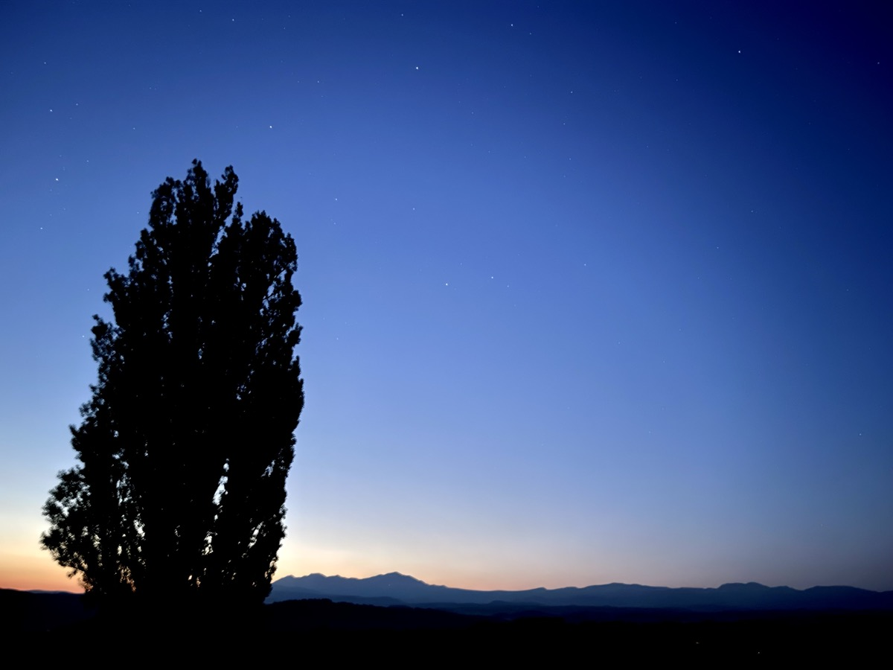
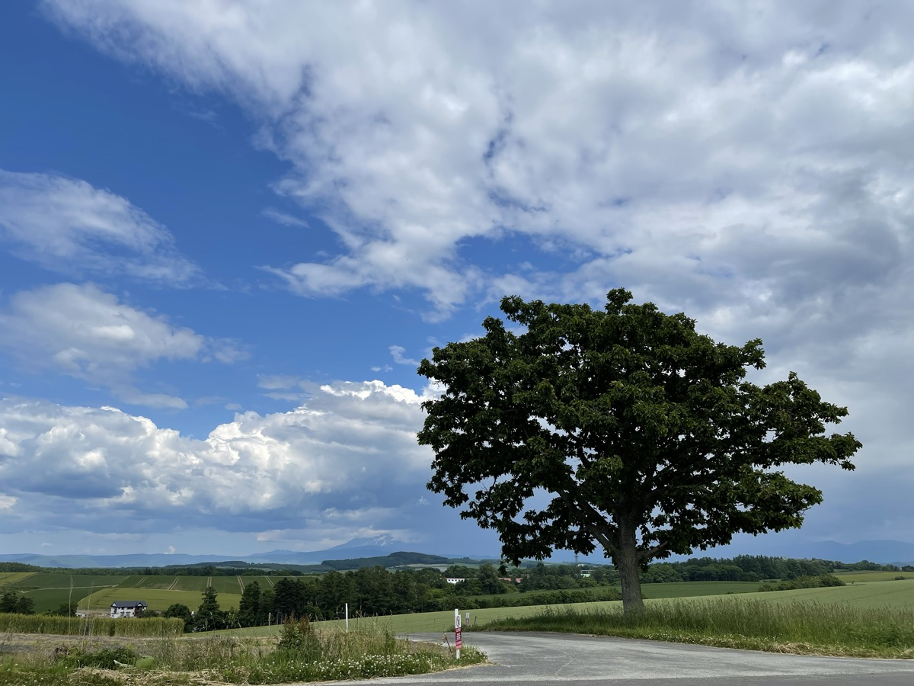
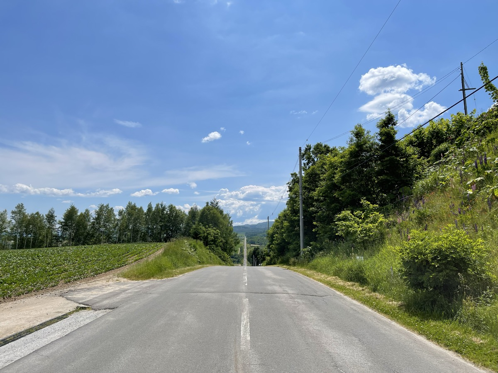

Con el oso de la noche anterior todavía en la cabeza, amaneció en Monbetsu. Hoy dejo de lado el mar de Okhotsk y giro hacia el interior, rumbo a Biei y Furano. Que el paisaje cambie tanto en una sola jornada es una de las cosas que hacen divertido rodar en Hokkaidō.
Parada en Saerubu-no-oka, Kamifurano
De Monbetsu hacia el interior. Al llegar a Kamifurano el aire ya estaba mucho más claro. Saerubu-no-oka es una zona de colinas conocida por sus flores: cambian con la estación. En junio aún era pronto para la lavanda, pero las ondulaciones del terreno y el patrón de patchwork eran preciosos.

Biei: el Estanque Azul
Un breve trayecto desde Kamifurano hasta Biei. El sitio que más esperaba: el Estanque Azul. Aquel del fondo de pantalla de los Mac. Hasta verlo, tenía mis dudas («¿no será Photoshop?»). Es real. Es exactamente así.


Me habían dicho que de mañana, sin contraluz, era cuando mejor se veía, así que fui a primera hora. Tal cual. Troncos secos sobresaliendo del agua, casi de ciencia ficción. Y ese azul, que por suerte sí sale en las fotos.
El árbol Ken & Mary, el árbol Seven Star
Biei tiene mucho más. El árbol Ken & Mary y el árbol Seven Star. Un pueblo en el que un solo árbol se convierte en destino turístico.



Ruta Patchwork, ruta Roller-Coaster
Las carreteras que enlazan estos árboles son, ellas mismas, paisaje. La ruta Patchwork convierte cada campo ondulado en una alfombra de un color distinto: solo rodarla ya gusta. La ruta Roller-Coaster, fiel al nombre, va recta hasta el horizonte subiendo y bajando todo el rato.

Hotel Lavenir (Biei)
Después de dar la vuelta a Biei, alojamiento en el Hotel Lavenir. La estación de carretera Biei «Oka-no-kura», justo al lado, vende productos locales y artesanía. Mañana, las lavandas de Furano y, después, la última etapa hacia Tomakomai.
De Okhotsk a Biei: el paisaje cambia en un solo día. Hokkaidō es enorme, y eso se aprende con el cuerpo.